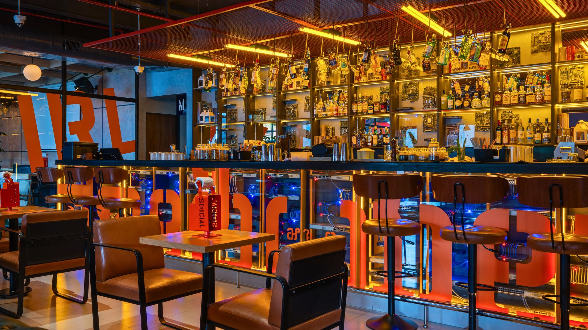
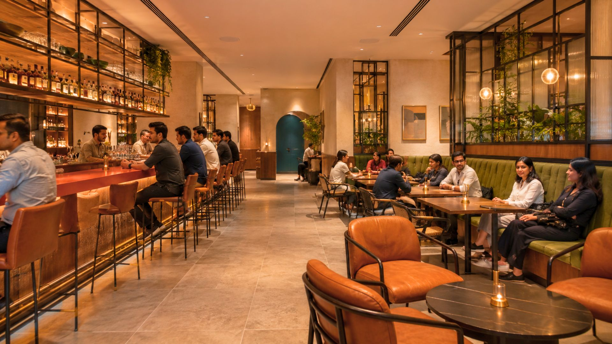
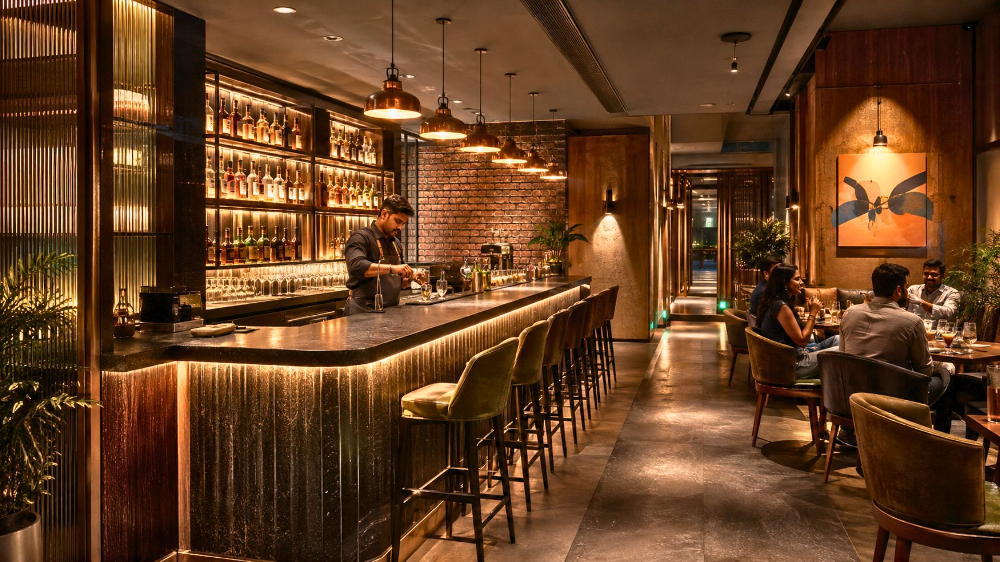
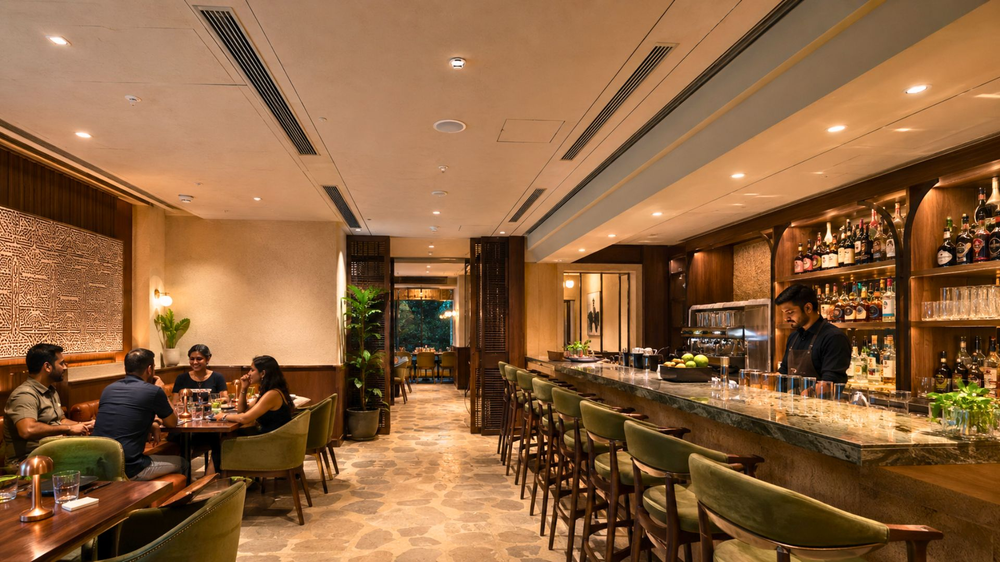
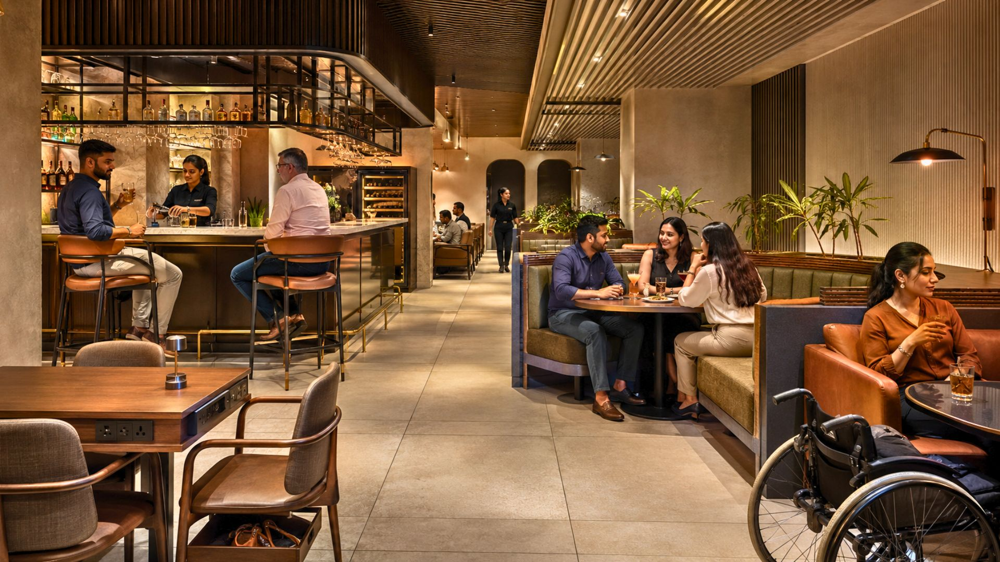
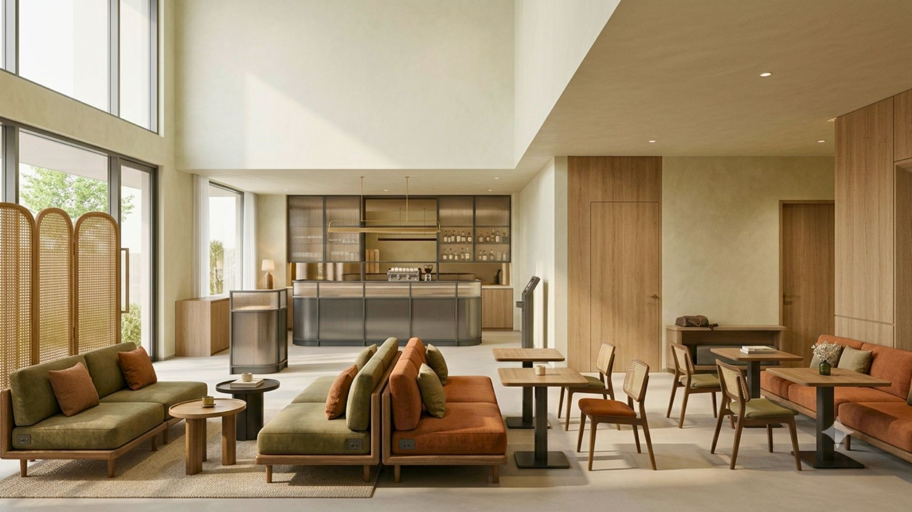
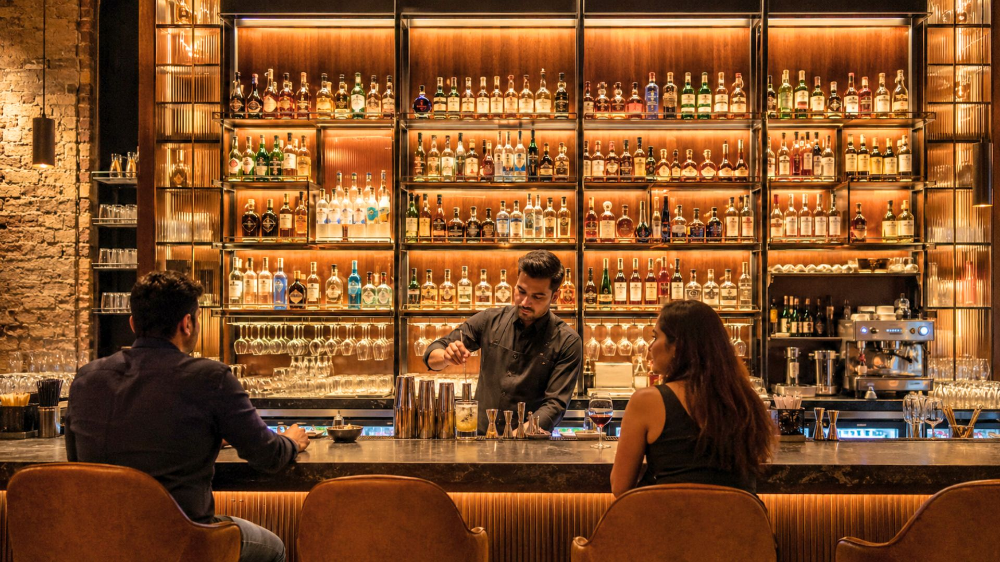
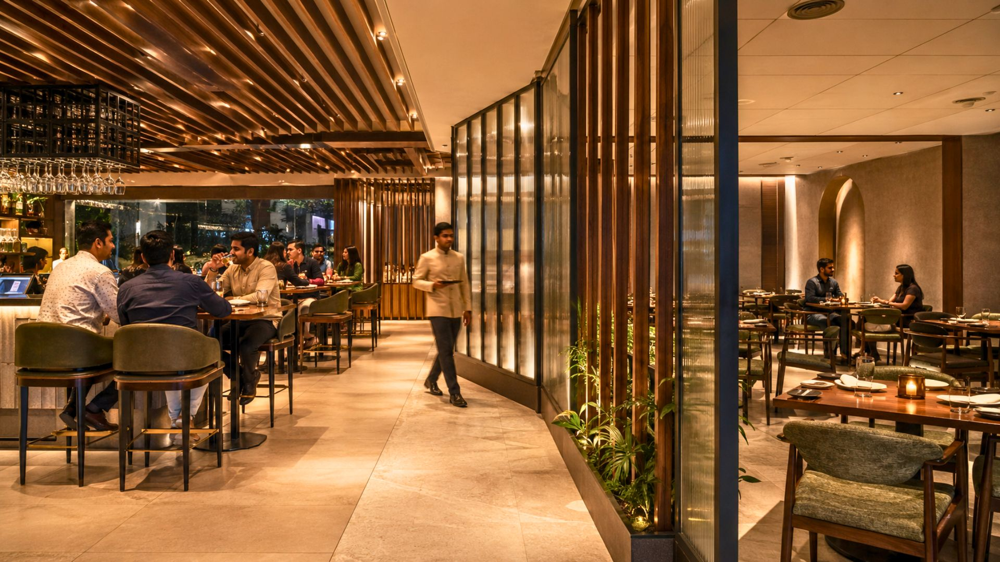

Successful restaurant ventures require attention beyond menu planning. The bar/lounge area is one of the USPs (unique selling points) of a booming restaurant business, and it deserves as much design intent as the dining room.
1. Design Your Bar With Your Target Population in Mind

Tailor your design to your audience — young crowds benefit from bold colours and modern furniture, while corporate clientele prefer simple, neat, monochromatic schemes.
2. Light It Right

Lighting transforms spaces and highlights their strengths. It can range from incandescent to neon, depending entirely on who your target customer actually is.
3. Let the Colours Speak

Research indicates colours influence psychology and decision-making. Red stimulates appetite; dark shades suppress it — pick your palette based on the behaviour you want to encourage.
4. Be Innovative With Your Seating Arrangement

Incorporate flexible seating options that accommodate various customer preferences and physical needs, rather than a single rigid layout.
5. Install Proper Ventilating Appendages

Adequate ventilation prevents stuffiness and removes smoke and odours for a pleasant environment — this is easy to underinvest in and hard to fix after the fact.
6. Display Your Wares Smartly

Use strategic lighting to showcase inventory and facilitate customer choices — a well-lit back bar sells more than a hidden one.
7. Keep the Lounge Area Away From the Dining Area

Separation prevents noise disruption between clientele groups — diners and bar patrons want different volumes and different energy.
8. Make Your Lounge Area More Functional

Convert your lounge into a waiting area or additional dining space during peak hours — flexible zoning gets more revenue out of the same square footage.
Conclusion
Careful planning and paying attention to every detail can make the design process a lot more enjoyable and fruitful — the bar area rewards that attention more than most parts of the restaurant.
Designing your restaurant's bar? At SprintCo, we treat the bar as its own design problem, not an afterthought. Let's talk about your project.